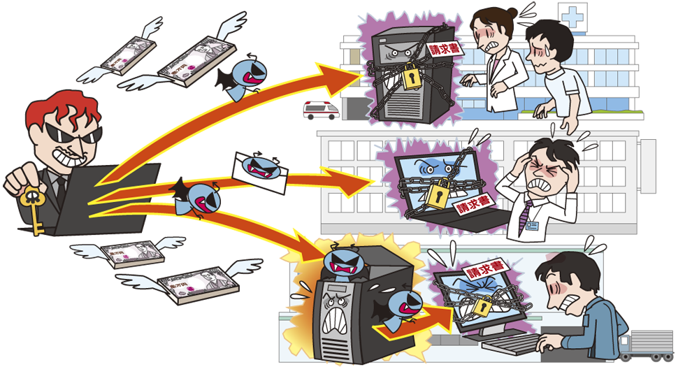

1.ランサムウェアとは
1.1 ランサムウェアとは
ランサムウェアとは、「Ransom（身代金）」と「Software（ソフトウェア）」を組み合わせた造語です。
感染したパソコンに特定の制限をかけ、その制限の解除と引き換えに金銭を要求する挙動から、このような
不正プログラムをランサムウェアと呼んでいます。

1.2 手口・感染経路
メールから感染させる
メールの添付ファイルやメール本文中のリンクを開かせることで、ランサムウェアに感染させる。また、近年は標的型攻撃メールといわれる受信者が思わずクリックしたくなる文章のメールから感染させる場合もある。
ウェブサイトから感染させる
脆弱性等を悪用しランサムウェアをダウンロードさせるよう改ざんしたウェブサイトや攻撃者が用意した正規サイトのURLを一部改変した偽のウェブサイトを閲覧させることで感染させる。
ネットワーク経由で感染させる
アップデートをせずに古いバージョンのソフトウェアのままインターネットに接続されている機器に対して、
その脆弱性を悪用してインターネット経由で感染させる。
引用
ランサムウェアとは？感染経路や事例、種類、最新の対策方法を解説